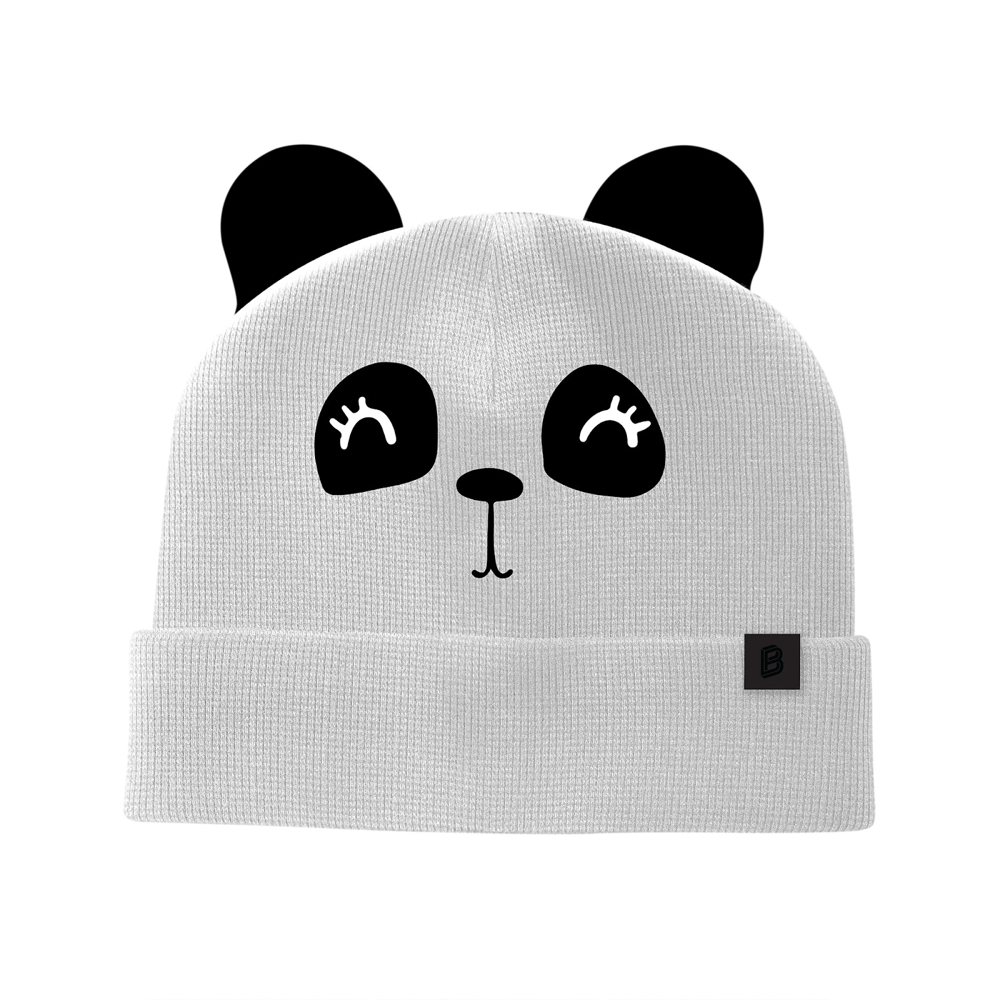
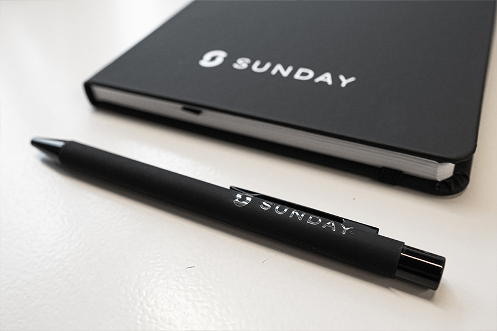
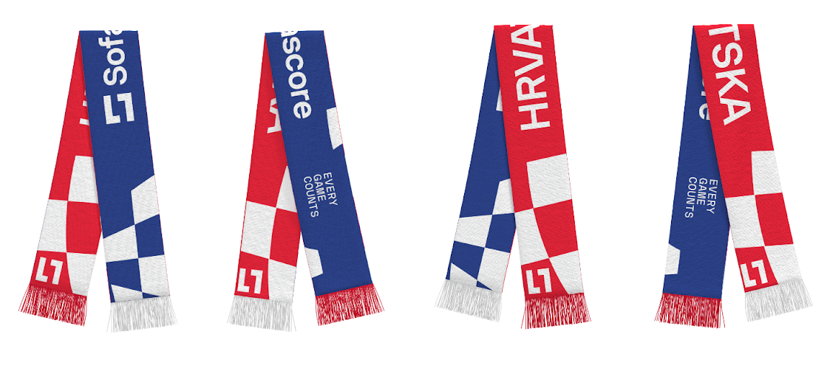
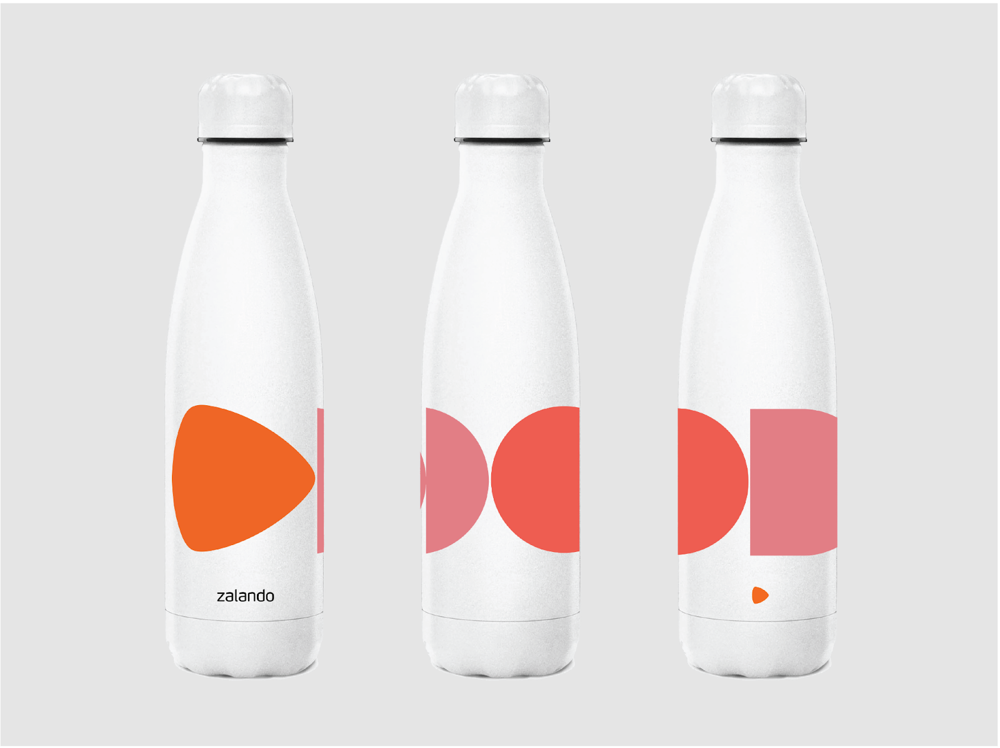
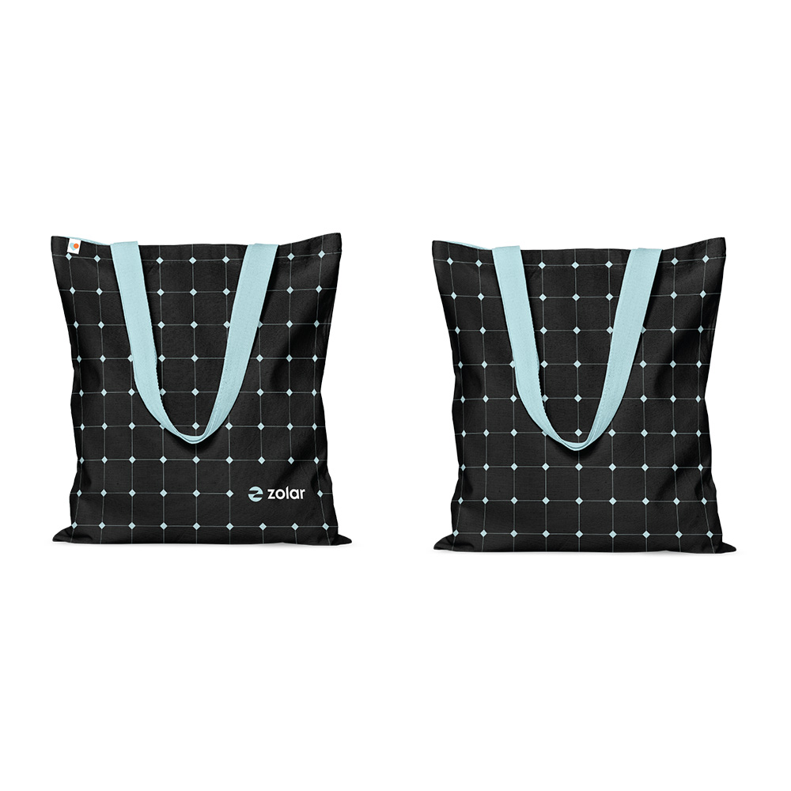

In today's competitive business landscape, standing out and building a strong brand presence is more crucial than ever. One powerful way to achieve this is through well-executed merchandise campaigns. Whether you aim to boost employee engagement, enhance customer loyalty, or attract new prospects, the right merchandise strategy can make all the difference. Here are 49 inspiring merchandise campaigns done by our customers ready to inspire your next one.
By designing a collection that resonates with your company's culture and values, employees feel a deeper connection to their workplace. This not only increases pride in the brand but also makes them more likely to promote the company externally. These branded pieces can be worn during events, in everyday life, or even shared on social media, helping to spread brand awareness organically.
Offering high-quality, desirable merchandise as a reward for referrals creates an incentive for employees to become active participants in the hiring process. When employees believe in the value of the reward, they're more likely to recommend potential candidates, knowing that their efforts will be recognized and rewarded. This approach can help tap into networks that might otherwise remain untapped, bringing in talent that aligns with the company culture.
Recruitment fairs are bustling with competition, and standing out is crucial. Unique and useful giveaways not only draw candidates to your booth but also leave a lasting impression. Items that are both practical and branded can become part of a candidate's daily life, keeping your company top-of-mind even after the event has ended. This subtle branding can influence a candidate's decision when considering job offers.
Starting a new job can be overwhelming, and sending a preboarding swag box helps ease this transition. This gesture shows new hires that they are valued even before they step into the office. It sets a positive tone, creating excitement and reducing first-day jitters. The contents can include branded office supplies, clothing, or even personal care items, all of which help the new employee feel part of the team from day one.
Customers who receive thoughtful, high-quality merchandise are more likely to become brand advocates. By providing items that are not just promotional but genuinely useful, customers feel appreciated and connected to the brand. This sense of loyalty often translates into word-of-mouth promotion, as customers naturally share their positive experiences with others, further enhancing brand reach.
In account-based marketing, personalized attention is key. Tailoring merchandise to the specific needs or preferences of different customer tiers shows that you understand and value their business. This customized approach helps deepen relationships, making customers feel like true partners rather than just another account. It also sets the stage for long-term collaboration and increased business opportunities.
Top customers expect premium treatment, and offering exclusive VIP merchandise is a powerful way to meet this expectation. These gifts should be of higher quality and more luxurious than standard promotional items, reflecting the value of the relationship. This not only reinforces their importance to your business but also encourages continued loyalty and engagement with your brand.
The onboarding process is crucial for setting the tone of your relationship with new customers. By providing a welcome package filled with branded merchandise, you make a strong first impression. This gesture shows that you care about their experience from the start, and it helps integrate them into your brand community. Thoughtful touches like these can make a customer feel valued and increase their long-term commitment to your brand.
The period between when a customer makes a purchase and when they receive their product can be an anxious time. By sending a lead time gift, you not only reassure the customer but also keep the excitement alive. This gesture shows that you value their patience and can help prevent any buyer's remorse that might arise during the waiting period. It's a thoughtful way to keep the relationship warm and engaging during this crucial phase.
Renewals are a key indicator of customer satisfaction and loyalty. Marking this occasion with a special gift not only expresses gratitude but also reaffirms the value of the relationship. A renewal gift can serve as a reminder of the benefits of staying with your company, and it can encourage customers to continue their commitment in the years to come. This small gesture can make a big difference in maintaining long-term customer relationships.
Celebrating milestones is an excellent way to strengthen relationships with your customers. A Merchbomb involves sending a series of thoughtful, branded gifts over a period of time, creating a sustained sense of appreciation and engagement. This can be particularly effective for long-term customers, helping them feel recognized and valued for their loyalty. It also serves to deepen their emotional connection to your brand.
Rebranding is more than just a logo change; it's about redefining your company's identity. Branded clothing in your new colors helps solidify this new identity both internally and externally. Employees wearing the new branding become walking billboards, promoting the change wherever they go. It also creates a sense of unity and shared purpose within the company, as everyone adopts the new look together.

Influencers have the power to sway consumer opinions, and when they are seen wearing or using your branded merchandise, it lends credibility to your brand. This type of marketing can significantly expand your reach, especially among younger demographics who follow these influencers closely. By carefully selecting the right influencers who align with your brand values, you can create authentic and impactful promotions.
A product launch is a critical time to generate buzz and excitement. Complementing your launch with related merchandise helps keep your product top-of-mind. This can include items that are directly related to the product or those that enhance the overall brand experience. These items serve as a constant reminder of the launch, encouraging ongoing interest and engagement with the new product.
Offering a merchandise shop allows your community to feel more connected to your brand. Fans and loyal customers can purchase items that help them express their affiliation with your brand, turning them into walking endorsements. Additionally, this approach can generate an additional revenue stream while deepening the sense of community among your customers and fans.
Community events are excellent opportunities to strengthen the bond between your brand and its followers. Providing merchandise during these events not only enhances the attendee experience but also creates lasting memories. Whether it's a local meetup, a fan convention, or a charity event, the right swag can make participants feel more connected to your brand and proud to display their affiliation.
Brand ambassadors play a crucial role in spreading the word about your company, and equipping them with the right merchandise can amplify their impact. By giving them high-quality, branded items to wear or use, you ensure that they are consistently representing your brand in a positive light. This also reinforces their identity as part of your brand's community, making them even more effective in their advocacy.
Investors are key stakeholders, and providing them with a well-crafted welcome kit can set the tone for a positive relationship. This kit can include luxury items that reflect the quality and aspirations of your brand. By making investors feel valued from the start, you build trust and encourage a deeper connection to your company's mission. These kits can also serve as conversation starters, helping investors to spread the word about your company.
A brand mascot can be a powerful tool for creating a memorable brand identity. By developing a collection of merchandise featuring your mascot, you can tap into its charm and familiarity to engage customers and employees alike. This merchandise can include anything from plush toys to apparel, all designed to reinforce the mascot's association with your brand. The more recognizable and beloved your mascot becomes, the stronger your brand identity will be.
Children's merchandise is a unique way to create brand loyalty from a young age. Whether it's branded toys, clothing, or school supplies, these items can make a lasting impression on both children and their parents. By appealing to families, you can build a broader customer base and establish a positive brand image that carries over into adulthood. Kids' gifts are also a great way to differentiate your brand and create memorable experiences for families.
Press events are crucial for generating media coverage, and a well-designed swag kit can leave a lasting impression on journalists. These kits should include items that are both useful and reflective of your brand, such as notebooks, pens, and tech gadgets. By providing thoughtful gifts, you create a positive association with your brand, making it more likely that the media will cover your event favorably. These kits can also serve as a reminder of your brand long after the event is over.
Prospecting is often the first step in building a business relationship, and a well-crafted prospection kit can make all the difference. By sending potential clients a package of branded merchandise, you show that you are serious about establishing a connection. These kits can include items that are both practical and memorable, helping to keep your brand top-of-mind during the decision-making process. A strong first impression can pave the way for future business opportunities.

Referral programs are a powerful tool for acquiring new customers, and offering desirable merchandise as a reward can significantly increase participation. By choosing items that are both high-quality and aligned with your brand, you encourage participants to share their positive experiences with others. This not only drives new business but also enhances the loyalty of your existing customers, as they feel rewarded for their advocacy.
Loyalty programs are a great way to reward repeat customers, and incorporating merchandise into the program can make it even more appealing. Customers can earn points through purchases, social media engagement, or referrals, which they can then redeem for branded items. This approach not only encourages ongoing engagement but also turns loyal customers into walking advertisements for your brand. A well-designed loyalty program can significantly boost customer retention and satisfaction.
Dealers are an essential part of your distribution network, and recognizing their achievements with exclusive rewards can strengthen these partnerships. By offering high-quality merchandise as a reward for meeting sales targets, you incentivize performance and reinforce loyalty. These rewards can range from practical items that support their business to luxury goods that reflect their success. A strong dealer reward program helps ensure that your dealers are motivated to continue driving sales and promoting your brand.
In the busy environment of a tradeshow, standing out is essential. Offering creative and desirable swag can draw attendees to your booth, giving you the opportunity to engage with them further. The right giveaway can spark conversations and help attendees remember your brand long after the event, leading to more meaningful connections and potential business opportunities.
Even in a digital space, physical merchandise can make a lasting impression. Sending swag to participants of your webinars or online events shows appreciation and keeps your brand in their thoughts. This can be particularly effective if the merchandise is useful and related to the event content, as it reinforces the learning and the positive experience they had during the event.
Events are opportunities to create lasting impressions, and the right merchandise can help attendees remember your event for years to come. Thoughtfully designed items that are both functional and stylish can extend the life of the event experience, keeping your brand top-of-mind long after the event concludes. This approach not only enhances the attendee experience but also strengthens brand loyalty.
Sponsors play a crucial role in the success of many events, and acknowledging their contribution with premium merchandise can go a long way in fostering a positive relationship. High-quality, thoughtful gifts show that you value their partnership and can encourage them to continue investing in future events. This approach helps build stronger, more enduring sponsor relationships.
The annual sales kickoff is a critical event for motivating your sales team and setting the tone for the year ahead. Providing a branded merchandise pack can help build excitement and reinforce the key messages of the event. These packs can include items like notebooks, water bottles, and apparel, all designed to remind the team of the goals they're working towards. A successful SKO with the right swag can drive team cohesion and set the stage for a productive year.
Teambuilding activities are all about fostering collaboration and camaraderie, and the right merchandise can enhance this experience. Branded gear, such as t-shirts or hats, can create a sense of unity and make the event more memorable. These items serve as a tangible reminder of the experience, helping to solidify the bonds formed during the event. Whether the activity is a fun outing or a challenging workshop, the right swag can make a lasting impact on team dynamics.
Company sports events are a great way to promote wellness and team bonding, and providing branded sportswear can enhance this experience. Whether it's for a charity run, a company softball game, or a friendly soccer match, outfitting your team in branded gear fosters a sense of unity and pride. This also serves as a great branding opportunity, as your company's logo will be visible to all participants and spectators. Encouraging a healthy lifestyle through sports events can boost morale and productivity across the company.

Team events, whether they are holiday parties, offsite meetings, or company picnics, are opportunities to strengthen workplace culture. Providing branded merchandise during these events can enhance the experience and leave a lasting impression on employees. These items can range from apparel to fun, event-specific items like sunglasses or tote bags. By associating your brand with positive, memorable experiences, you help build a stronger, more engaged team.
When customers encounter issues, how you handle the resolution can make or break their loyalty. Following up a resolution with a thoughtful swag pack shows that you care about their experience and are committed to making things right. This gesture can transform a potentially negative situation into a positive one, leaving customers with a favorable impression of your brand.
Customers may become inactive for a variety of reasons, but a well-timed reactivation campaign can bring them back. Sending a carefully curated swag pack as a reminder of your brand can reignite their interest and encourage them to re-engage. This approach not only revives dormant relationships but can also lead to renewed loyalty and future business.
Welcoming a new baby is a significant life event, and acknowledging it with a thoughtful gift can make a lasting impact. A branded baby gift package can include items like onesies, blankets, or toys, all featuring your company's logo or colors. This gesture shows that you care about your employees' or customers' personal lives, strengthening their emotional connection to your brand. It's a simple yet powerful way to build goodwill and foster long-term loyalty.
Celebrating employee tenure is a meaningful way to acknowledge their dedication and loyalty to the company. A special anniversary gift, such as a personalized item or a high-quality piece of merchandise, can make employees feel valued and appreciated. This recognition not only boosts morale but also encourages long-term retention by demonstrating that the company cares about its employees' contributions over the years.
A company's anniversary is a significant milestone that deserves to be celebrated. Creating a special edition of branded merchandise for this occasion can generate excitement and foster a sense of pride among employees and customers alike. These items can be limited-edition products that highlight the company's journey and achievements, making them highly desirable and collectible. Celebrating your company's birthday in this way not only honors your history but also strengthens the sense of community around your brand.
Campus recruitment is a crucial time to attract young talent, and the right merchandise can make your company stand out to students. Items that are both practical and stylish, such as notebooks, water bottles, or tote bags, can leave a lasting impression on potential recruits. These items not only draw attention to your booth but also serve as a reminder of your company long after the event is over. Engaging with students through branded merchandise can help position your company as an employer of choice among top talent.
Completing a training program is an accomplishment worth celebrating, and providing branded merchandise as a reward can reinforce the value of professional development. These rewards can be anything from certificates and plaques to wearable items like jackets or backpacks. Recognizing employees' efforts in this way not only boosts their morale but also encourages continued learning and growth within the company. This approach helps build a culture of continuous improvement and dedication to personal and professional development.
Company retreats are an opportunity to reinforce team bonds and company culture, and the right branded gear can enhance this experience. Providing employees with items like t-shirts, hoodies, or travel bags can create a sense of unity and shared purpose during the retreat. These items also serve as lasting mementos of the experience, reminding employees of the lessons learned and the connections made. A successful retreat with the right swag can leave a lasting positive impact on team dynamics and company culture.
Recognizing an employee's birthday is a simple yet powerful way to show that you value them as individuals. A personalized gift, whether it's a small token or a more significant item, can make the employee feel special and appreciated. This gesture fosters a positive work environment where employees feel recognized and valued, leading to increased job satisfaction and morale. Celebrating birthdays in the workplace also helps build a sense of community and belonging among the team.
Work anniversaries are milestones that deserve to be celebrated, as they represent an employee's commitment and contributions to the company. A unique gift that reflects the employee's achievements and the company's gratitude can make a significant impact. These gifts can be personalized to reflect the employee's interests or accomplishments, making the recognition even more meaningful. Celebrating work anniversaries in this way helps to reinforce loyalty and encourage long-term retention.
The end of the year is a time for reflection and celebration, and offering thoughtful branded gifts can be a meaningful way to show appreciation to both employees and clients. These gifts can range from luxury items to practical tools, all designed to celebrate the year's achievements and express gratitude for the support and hard work that made it possible. End-of-year gifts help to close the year on a positive note, fostering goodwill and setting the stage for continued success in the coming year.
As the summer season approaches, it's a great opportunity to send employees off with a gift that celebrates the warm weather and encourages relaxation. Branded items like beach towels, sunglasses, or water bottles can help create a positive atmosphere and show that you value your employees' well-being. This gesture not only enhances morale but also reinforces the idea that the company cares about work-life balance. A summer holiday kickoff gift can help employees recharge and return to work refreshed and motivated.
Pride celebrations are an important opportunity to show your company's commitment to diversity and inclusion. Offering Pride-themed merchandise, such as rainbow-colored apparel or accessories, can demonstrate your support for the LGBTQ+ community. This merchandise not only aligns with your company's values but also helps to create an inclusive environment where all employees feel respected and valued. Celebrating Pride in this way helps to strengthen your company's culture and reputation as an inclusive and supportive workplace.
Your sales team is often the face of your company, and outfitting them in branded attire can help reinforce a professional and cohesive image. Custom-designed outfits that reflect your company's brand colors and style can make your team stand out in a positive way. This not only boosts their confidence but also ensures that they are always representing the brand consistently, whether they're at a client meeting, a tradeshow, or a networking event. Well-designed sales outfits contribute to a polished and professional image that can enhance your team's effectiveness.
For companies that have installation teams working in the field, providing branded uniforms is essential for maintaining a professional image. These uniforms not only help identify your team members but also reinforce your brand's presence on-site. High-quality, durable outfits that are both functional and stylish ensure that your team is comfortable while working and that they represent your company in the best possible light. A well-dressed installation team can enhance customer trust and confidence in your services.
After completing a service or installation, send your customers a thoughtful post-installation gift to thank them for their business and reinforce your brand.The period following the completion of an installation or service is a critical time to solidify your relationship with the customer. A well-chosen post-installation gift can leave a lasting positive impression, reminding customers of the quality of your service and your appreciation for their business. This gift can be something practical that complements the installation, such as a maintenance kit, or a more general token of appreciation, like a branded gadget or a quality piece of merchandise. By following up with a post-installation gift, you show that you go above and beyond for your customers, which can lead to repeat business, referrals, and strong word-of-mouth recommendations.

Looking to start dressing your team?
Want to discuss a project? Interested in
visiting one of our offices? Let us know!